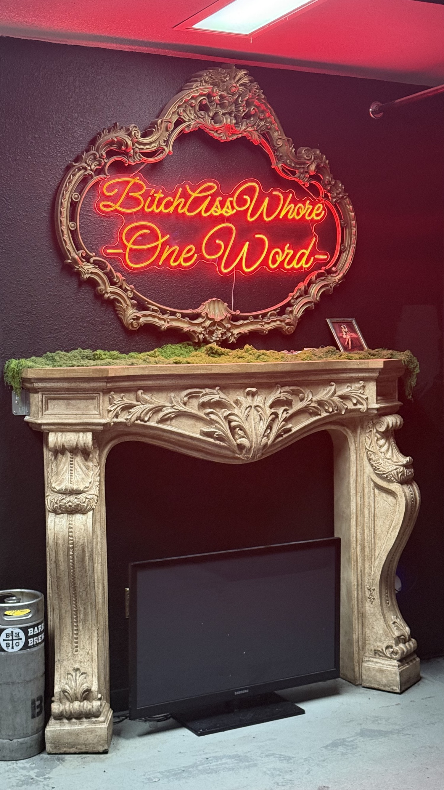
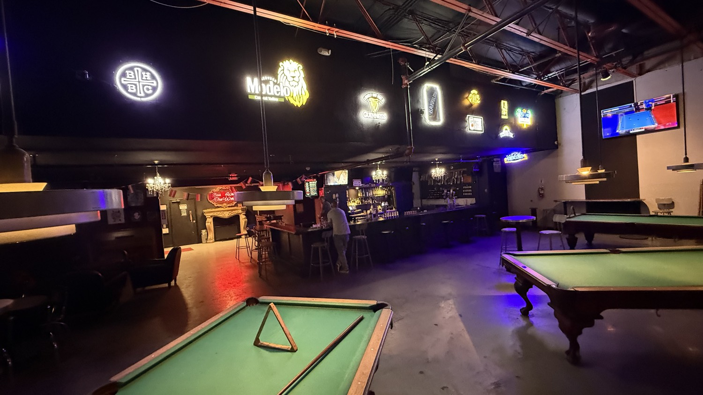
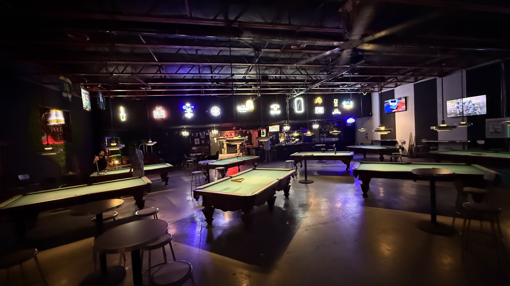
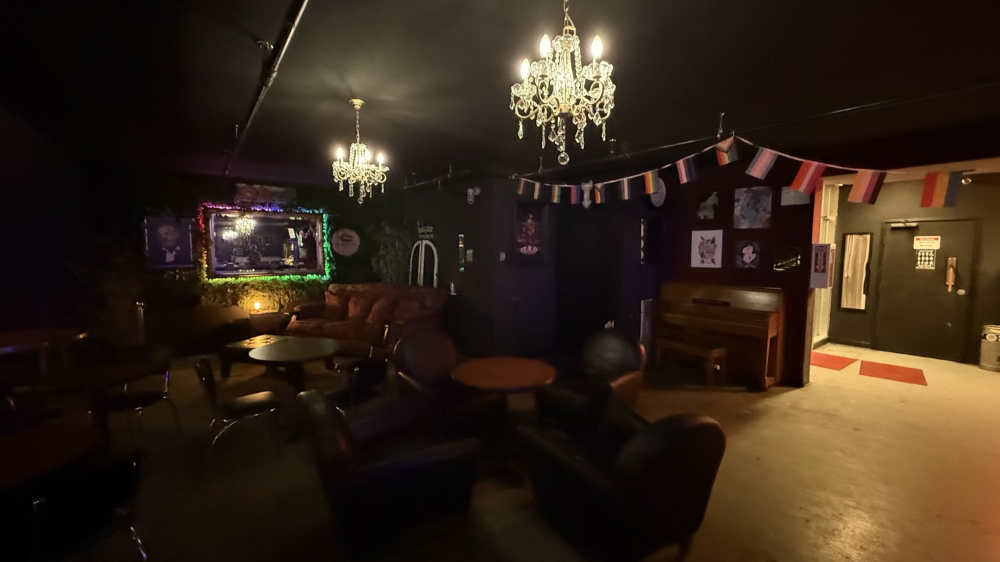
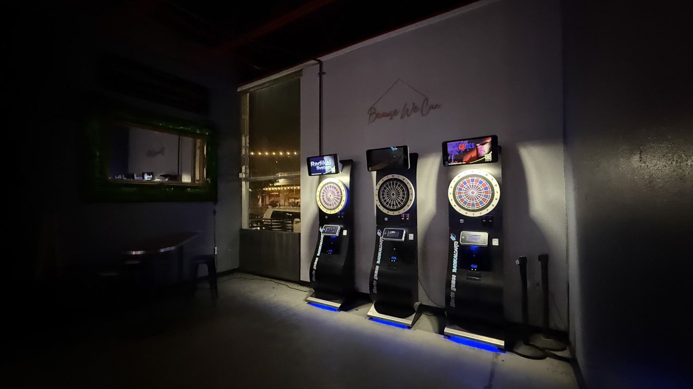
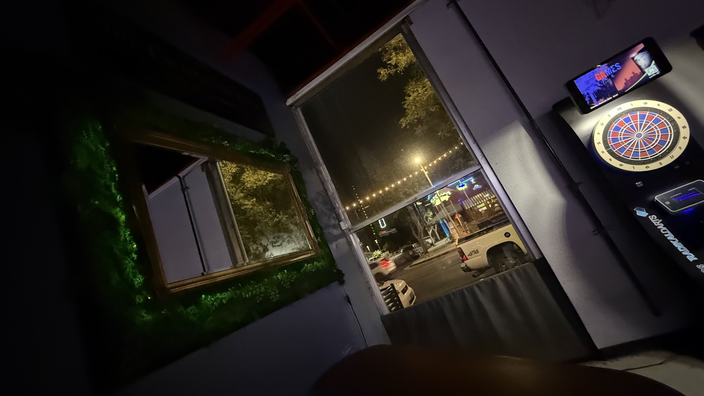
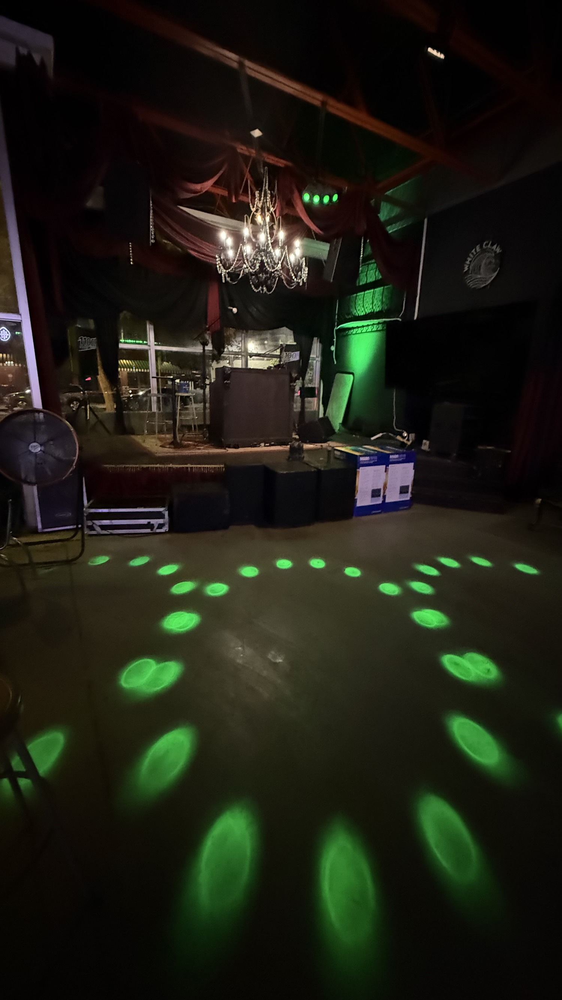

For years the big room on Olive was Detention. High-school lockers, teacher costumes, the whole bit. Upstairs you needed a password and a hidden door behind the lockers to reach The Library, a tiny 1920s speakeasy with mugshots on the walls.
Lisa Tackett worked the bar there long enough to know every corner. In January she bought the place. By June the names had changed: Detention became The Enchanted Pour. The Library became Sin ’n Satin.
She timed the grand opening for the first Saturday of Pride. Drag, burlesque, a $15 cover that went straight to Fresno Rainbow Pride. Crimson curtains went up. A witch mural appeared by the front door. The message was simple and loud: everyone is welcome here.
The tables stayed

The pool tables stayed. The big green felt still runs the length of the room. You can still rack a triangle, still lean on a high-top, still watch the neon beer signs reflect off the polished concrete. But the air feels different now. The old detention theme has been replaced by something more deliberate and a little more theatrical.

The quieter corners

Walk farther back and the mood shifts again. Leather couches, crystal chandeliers, a piano against the wall, international flags strung across the ceiling. It feels like the quiet corner of a house party that somehow ended up inside a warehouse.
Because We Can


Around the corner the electronic dart machines sit under their own soft blue glow. A simple white neon script on the wall reads “Because We Can.” A moss-framed mirror faces the street windows so you can watch Olive Avenue traffic while you wait for your turn.
The floor is already lit

And then there is the stage. Green spotlight circles scatter across the floor. Red drapes, a crystal chandelier hanging low, speakers and road cases stacked and ready. This is where the new chapter is being written out loud. Sin ’n Satin is moving from hidden speakeasy toward something more open and more physical—burlesque, live performance, the kind of nights that make the room feel enchanted instead of detained.
Lisa has said she wanted a place that feels magical but still costs five dollars for a drink. A place her own kids and the people who work for her can walk into and feel claimed. The pool tables are still level. The beer is still cold. The difference is the intention hanging in the air with the moss and the neon and the green lights on the floor.
The Enchanted Pour is open. The old Detention sign is gone. The secret door still exists, but the password has changed.